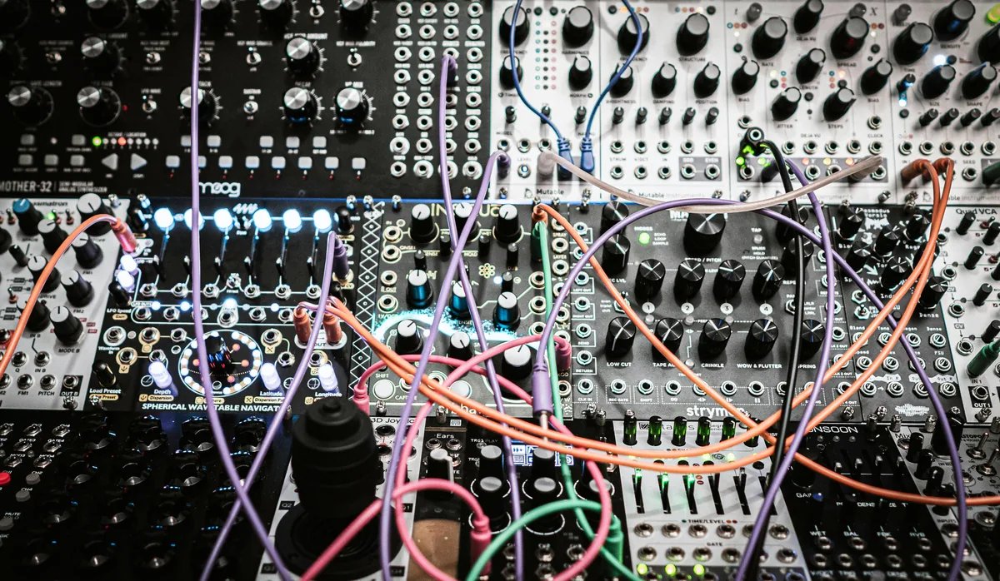

Sztuczna inteligencja generuje dziś utwory w kilkanaście sekund - wystarczy opis tekstowy. Dla wielu twórców to wygodne narzędzie do szkiców pomysłów, ale dla branży muzycznej jako całości ta technologia niesie ze sobą realne zagrożenia. Warto przyjrzeć się im uczciwie, zanim zachwycimy się samą wygodą.
Zalew platform streamingowych muzyką generowaną automatycznie
Serwisy streamingowe raportują, że tysiące utworów tworzonych przez AI trafiają na ich platformy każdego dnia. Część z nich jest publikowana masowo, wyłącznie w celu wyłudzania przychodów z odtworzeń - tzw. "farming streamów". To utrudnia odbiorcom znalezienie muzyki tworzonej przez ludzi i rozmywa uwagę algorytmów rekomendacji, które promują treści na podstawie statystyk, a nie jakości.
Presja na zarobki muzyków sesyjnych i kompozytorów
Muzyka tła do reklam, filmów korporacyjnych czy podcastów to od lat źródło dochodu wielu kompozytorów i muzyków sesyjnych. AI potrafi wygenerować podobny efekt w kilka minut i praktycznie za darmo. Zlecenia, które kiedyś trafiały do freelancerów, coraz częściej realizowane są automatycznie - szczególnie w segmencie muzyki budżetowej, gdzie liczy się cena, a nie oryginalność.
Jeśli zastanawiasz się, jaki sprzęt i budżet są potrzebne na start niezależnie od tego, co robi AI, sprawdź nasz poradnik o home studio za małe pieniądze.
Homogenizacja brzmienia i spadek jakości
Modele AI uczą się na ogromnych zbiorach istniejących utworów, więc naturalnie dążą do uśrednienia - odtwarzają najbardziej popularne wzorce harmoniczne, rytmiczne i produkcyjne. Efekt to muzyka poprawna technicznie, ale często pozbawiona charakteru. Jeśli tego typu treści zaczną dominować w playlistach, słuchacze mogą przyzwyczaić się do przewidywalnego, bezpiecznego brzmienia kosztem eksperymentów i indywidualnego stylu.
Prawa autorskie i etyka treningu modeli
Większość modeli generujących muzykę była trenowana na utworach chronionych prawem autorskim, często bez zgody i wynagrodzenia dla twórców. To rodzi pytania o to, kto właściwie jest autorem wygenerowanego utworu i czy artyści, na których dziełach model się uczył, powinni otrzymać jakąkolwiek rekompensatę. Sprawy sądowe w tym obszarze dopiero się toczą, a przepisy nie nadążają za tempem rozwoju technologii.
Jak muzycy i producenci mogą się odnaleźć w tej sytuacji
Nie wszystko stracone. Rynek zaczyna doceniać transparentność - część platform i wytwórni wprowadza oznaczenia treści generowanych przez AI, a słuchacze coraz częściej szukają autentyczności i historii stojącej za utworem. Dla producentów i realizatorów dźwięku oznacza to, że warto stawiać na to, czego AI nie potrafi jeszcze dobrze naśladować: żywy feeling wykonania, niedoskonałości budujące charakter nagrania oraz osobistą markę artysty. Umiejętności miksu i masteringu pozostają też kluczowe - nawet materiał wygenerowany przez AI często wymaga ręcznej obróbki, żeby brzmiał profesjonalnie.
Umiejętności miksu i masteringu to jedna z rzeczy, których trudno w pełni zautomatyzować - różnicę między nimi wyjaśniamy w artykule mix a mastering - różnice. A jeśli dopiero zaczynasz przygodę z produkcją muzyki, zobacz nasz przewodnik jak zacząć produkcję muzyki.

Sztuczna inteligencja w muzyce nie zniknie, ale jej wpływ na branżę zależy w dużej mierze od tego, jak zareagują na nią platformy, ustawodawcy i sami twórcy. Świadomość zagrożeń to pierwszy krok do tego, żeby technologia wspierała muzyków, a nie ich zastępowała.
Najczęstsze pytania (FAQ)
Czy muzyka tworzona przez AI jest legalna?
Tak, samo generowanie nie jest nielegalne, ale trwają spory sądowe dotyczące trenowania modeli na chronionych utworach bez zgody twórców.
Czy Spotify oznacza utwory generowane przez AI?
Niektóre platformy testują takie oznaczenia, ale na razie nie ma jednolitego standardu w całej branży.
Czy AI zastąpi producentów muzycznych?
Raczej zmieni ich rolę - żywy feeling, miks i mastering pozostają trudne do w pełni zautomatyzowania.
Jak rozpoznać utwór stworzony przez AI?
Często zdradza go przesadna "poprawność" brzmienia i brak naturalnych niedoskonałości wykonania.